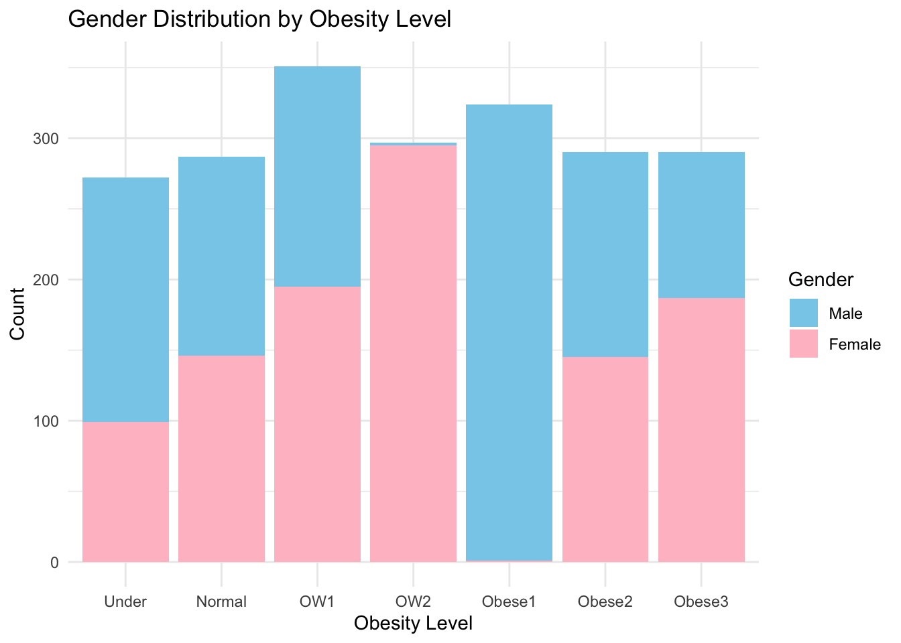

This file loads the processed data cleaned from processingfile-v1 and basic descriptive analysis is applied in this file.
Setup
#load needed packages. make sure they are installed.library(here) #for data loading/saving
here() starts at /Users/XylemHu/Desktop/EPID8060E/GitHub/XUEYANHU-MADA-project
library(dplyr)
Attaching package: 'dplyr'
The following objects are masked from 'package:stats':
filter, lag
The following objects are masked from 'package:base':
intersect, setdiff, setequal, union
library(skimr)library(ggplot2)
Load the data.
#Path to data. Note the use of the here() package and not absolute pathsdata_location <- here::here("data","processed-data","processeddata.rds")#load datamydata <-readRDS(data_location)
gender and age distribution for the cohort under investigation
# Convert numeric values to labelsmydata$Gender <-ifelse(mydata$Gender ==1, "Male", "Female")# bar chart of gender distributionbc1 <-ggplot(mydata, aes(x = Gender)) +geom_bar(fill =c("pink", "skyblue"), color ="black", width =0.5) +geom_text(stat ='count', aes(label=..count..), vjust =-0.5, size=3, color="black") +labs(x ="Gender", y ="Count", title ="Bar Chart of Gender Distribution") +theme_minimal()plot(bc1)
Warning: The dot-dot notation (`..count..`) was deprecated in ggplot2 3.4.0.
ℹ Please use `after_stat(count)` instead.
# histogram of population by age# Calculate the bin edges and labelsbin_data <- mydata %>%mutate(bin =cut(Age, breaks =c(0, 10, 20, 30, 40, 50, 60, 70, Inf), labels =FALSE, include.lowest =TRUE)) %>%group_by(bin) %>%summarise(bin_min =min(Age), bin_max =max(Age)) %>%mutate(bin_min =as.integer(bin_min), # Convert bin_min to integerbin_max =as.integer(bin_max), # Convert bin_max to integerbin_label =sprintf("%d-%d", bin_min, bin_max)) # Format bin labelshp2 <-ggplot(mydata, aes(x = Age)) +geom_histogram(binwidth =10, fill ="grey", color ="black") +labs(x ="Age", y ="Count", title ="Histogram of Age distribution") +stat_bin(binwidth =10, geom ="text", aes(label = ..count..),vjust =-0.5, color ="black", size =3) +geom_text(data = bin_data, aes(x = bin_min + (bin_max - bin_min)/2-5, y =-5, label = bin_label),vjust =+1.2, size =3, color ="black") +# Add text labels for binstheme_minimal() +theme(axis.text.x =element_text(size =8)) # Adjust the size of x-axis textplot(hp2)
# bar chart of obesity level distributionbc3 <-ggplot(mydata, aes(x = Obesity)) +geom_bar() +geom_text(stat ='count', aes(label=..count..), vjust =-0.5, size=3, color="black") +scale_x_discrete(labels =c("Under", "Normal", "OW1", "OW2", "Obese1", "Obese2", "Obese3")) +labs(x ="Obesity level", y ="Count", title ="Bar Chart of obesity Distribution") +theme_minimal()plot(bc3)
# obesity level by gendersbp4 <-ggplot(mydata, aes(x = Obesity, fill = Gender)) +geom_bar(position ="stack") +labs(x ="Obesity Level", y ="Count", title ="Gender Distribution by Obesity Level") +scale_fill_manual(values =c("skyblue", "pink"), labels =c("Male", "Female")) +scale_x_discrete(labels =c("Under", "Normal", "OW1", "OW2", "Obese1", "Obese2", "Obese3")) +theme_minimal()plot(sbp4)

# Obesity level by age# Categorize age into groupsmydata <- mydata %>%mutate(Age_Group =cut(Age, breaks =c(0, 20, 30, 40, 50, 60, 70, Inf),labels =c("0-20", "21-30", "31-40", "41-50", "51-60", "61-70", "71+")))sbp5 <-ggplot(mydata, aes(x = Obesity, fill = Age_Group)) +geom_bar(position ="stack",stat ="count") +coord_flip() +# Rotate the plot to make it horizontallabs(x ="Obesity level", y ="Count", title ="Stacked Bar Chart of Obesity Level by Age") +theme_minimal()plot(sbp5)
I think the population distribution for age is not balanced since 20-30 age groups contains most of the observations so I will not explore the relationship between obesity and age.
The relationship between family obesity history and obesity level
vp6 <-ggplot(mydata, aes(x = History, y = BMI, fill = History)) +geom_violin() +# Add violin geometrygeom_boxplot(width =0.1, fill ="white", color ="black") +# Add boxplot for better visualizationgeom_jitter(aes(color = History), width =0.2, alpha =0.5, size =1) +# Add jittered scatterplotlabs(x ="Family History of Obesity", y ="BMI", title ="Violin Plot of BMI by History of Obesity") +scale_fill_manual(values =c("yes"="lightyellow", "no"="lightgreen")) +# Define colorstheme_minimal()plot(vp6)
We are saving the results to the results folder. Depending on how many tables/figures you have, it might make sense to have separate folders for each. And/or you could have separate folders for exploratory tables/figures and for final tables/figures. Just choose a setup that makes sense for your project and works for you, and provide enough documentation that someone can understand what you are doing.
figure_file =here("results","figures","obesity level by geder.png")ggsave(filename = figure_file, plot=sbp4)
Saving 7 x 5 in image
figure_file =here("results","figures","obesity level by age.png")ggsave(filename = figure_file, plot=sbp5)
Saving 7 x 5 in image
figure_file =here("results","figures","obesity level by family history.png")ggsave(filename = figure_file, plot=vp6)
Saving 7 x 5 in image
Notes
For your own explorations, tables and figures can be “quick and dirty”. As long as you can see what’s going on, there is no need to polish them. That’s in contrast to figures you’ll produce for your final products (paper, report, presentation, website, etc.). Those should look as nice, polished and easy to understand as possible.